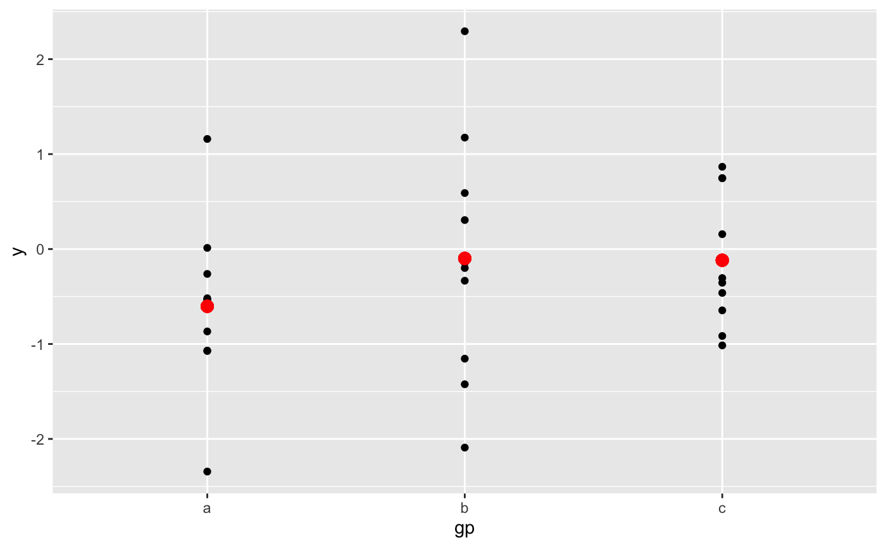
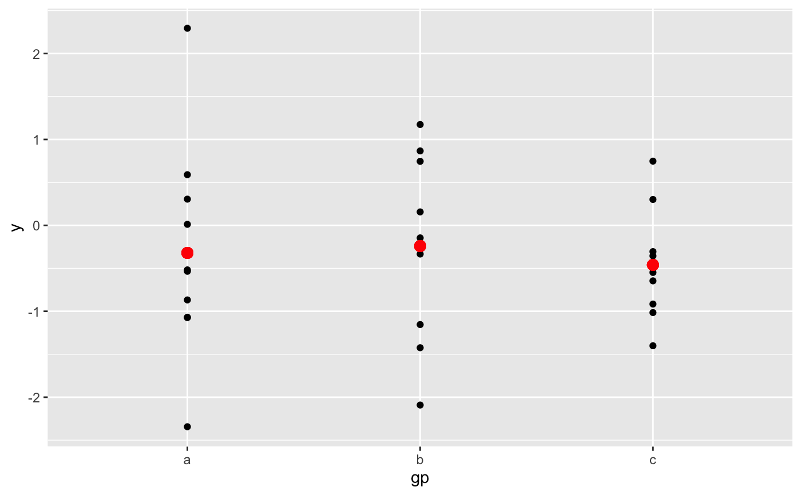
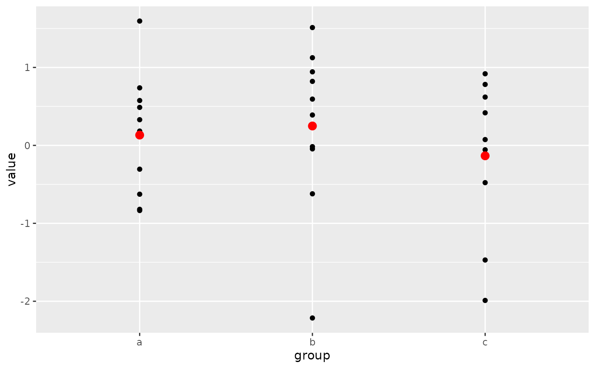

ggplot() initializes a ggplot object. It can be used to
declare the input data frame for a graphic and to specify the
set of plot aesthetics intended to be common throughout all
subsequent layers unless specifically overridden.
Usage
ggplot(data = NULL, mapping = aes(), ..., environment = parent.frame())Arguments
- data
Default dataset to use for plot. If not already a data.frame, will be converted to one by
fortify(). If not specified, must be supplied in each layer added to the plot.- mapping
Default list of aesthetic mappings to use for plot. If not specified, must be supplied in each layer added to the plot.
- ...
Other arguments passed on to methods. Not currently used.
- environment
![[Deprecated]](figures/lifecycle-deprecated.svg) Used prior to tidy
evaluation.
Used prior to tidy
evaluation.
Details
ggplot() is used to construct the initial plot object,
and is almost always followed by a plus sign (+) to add
components to the plot.
There are three common patterns used to invoke ggplot():
ggplot(data = df, mapping = aes(x, y, other aesthetics))ggplot(data = df)ggplot()
The first pattern is recommended if all layers use the same data and the same set of aesthetics, although this method can also be used when adding a layer using data from another data frame.
The second pattern specifies the default data frame to use for the plot, but no aesthetics are defined up front. This is useful when one data frame is used predominantly for the plot, but the aesthetics vary from one layer to another.
The third pattern initializes a skeleton ggplot object, which
is fleshed out as layers are added. This is useful when
multiple data frames are used to produce different layers, as
is often the case in complex graphics.
The data = and mapping = specifications in the arguments are optional
(and are often omitted in practice), so long as the data and the mapping
values are passed into the function in the right order. In the examples
below, however, they are left in place for clarity.
See also
The first steps chapter of the online ggplot2 book.
Examples
# Create a data frame with some sample data, then create a data frame
# containing the mean value for each group in the sample data.
set.seed(1)
sample_df <- data.frame(
group = factor(rep(letters[1:3], each = 10)),
value = rnorm(30)
)
group_means_df <- setNames(
aggregate(value ~ group, sample_df, mean),
c("group", "group_mean")
)
# The following three code blocks create the same graphic, each using one
# of the three patterns specified above. In each graphic, the sample data
# are plotted in the first layer and the group means data frame is used to
# plot larger red points on top of the sample data in the second layer.
# Pattern 1
# Both the `data` and `mapping` arguments are passed into the `ggplot()`
# call. Those arguments are omitted in the first `geom_point()` layer
# because they get passed along from the `ggplot()` call. Note that the
# second `geom_point()` layer re-uses the `x = group` aesthetic through
# that mechanism but overrides the y-position aesthetic.
ggplot(data = sample_df, mapping = aes(x = group, y = value)) +
geom_point() +
geom_point(
mapping = aes(y = group_mean), data = group_means_df,
colour = 'red', size = 3
)

# Pattern 2
# Same plot as above, passing only the `data` argument into the `ggplot()`
# call. The `mapping` arguments are now required in each `geom_point()`
# layer because there is no `mapping` argument passed along from the
# `ggplot()` call.
ggplot(data = sample_df) +
geom_point(mapping = aes(x = group, y = value)) +
geom_point(
mapping = aes(x = group, y = group_mean), data = group_means_df,
colour = 'red', size = 3
)

# Pattern 3
# Same plot as above, passing neither the `data` or `mapping` arguments
# into the `ggplot()` call. Both those arguments are now required in
# each `geom_point()` layer. This pattern can be particularly useful when
# creating more complex graphics with many layers using data from multiple
# data frames.
ggplot() +
geom_point(mapping = aes(x = group, y = value), data = sample_df) +
geom_point(
mapping = aes(x = group, y = group_mean), data = group_means_df,
colour = 'red', size = 3
)
